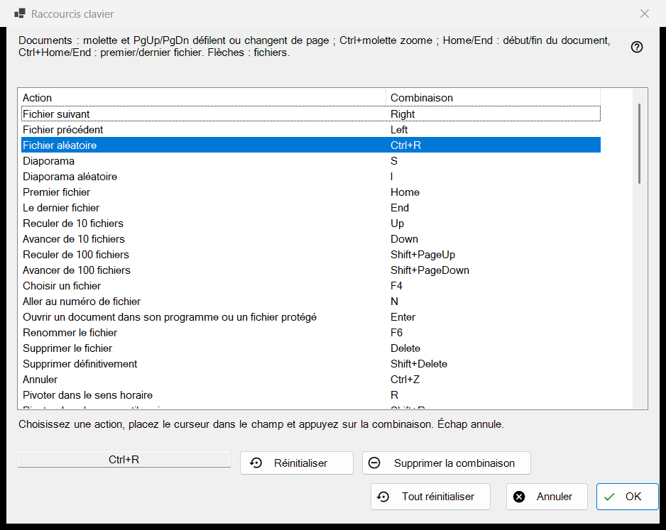
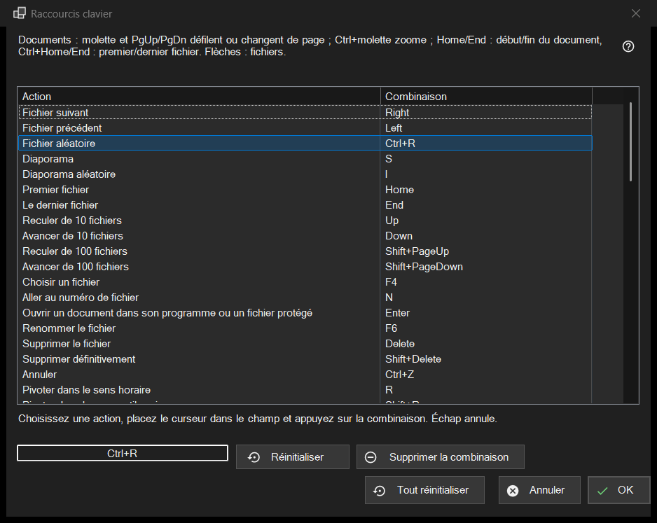

Raccourcis clavier
Objectif
La liste de toutes les actions de la visionneuse dont vous pouvez changer la touche, avec la combinaison à laquelle elles répondent actuellement. Elle s'ouvre depuis les Paramètres, page Fichiers et système, avec le bouton Configurer.. de la ligne Raccourcis clavier. La fenêtre modifie une copie : rien n'atteint votre profil tant que vous n'appuyez pas sur OK.


Dans cet ordre
- Ouvrez les Paramètres, allez à Fichiers et système et appuyez sur Configurer.. dans la ligne Raccourcis clavier.
- Sélectionnez une action dans la liste.
- Cliquez dans le champ sous la liste et appuyez sur la nouvelle combinaison.
- Si une autre action la possède déjà, choisissez Échanger les raccourcis, Le retirer de cette action ou Annuler.
- Répétez pour les autres actions ; utilisez Réinitialiser, Supprimer la combinaison ou Tout réinitialiser si besoin.
- Appuyez sur OK pour garder les modifications, ou sur Annuler pour toutes les abandonner.
Les éléments
La liste Action et Combinaison
Chaque ligne est une action avec sa combinaison principale ; une action sans touche affiche Non attribué. Les dix emplacements de dossier apparaissent sous la forme Déplacer vers le dossier 1..0 et Copier vers le dossier 1..0 (les touches chiffres déplacent, Shift plus un chiffre de la rangée du haut copie). Certaines actions répondent aussi à des touches supplémentaires d'origine (Fichier suivant réagit aussi à la barre d'espace et à PageDown). La liste n'affiche que la principale, mais dès que vous donnez à l'action une nouvelle combinaison, toutes ses anciennes touches d'origine cessent de fonctionner. Le texte au-dessus de la liste indique les touches fixes des documents (molette, PgUp/PgDn, Home/End, flèches) qui ne figurent pas dans la liste.
Enregistrer une combinaison
Sélectionnez une ligne, puis cliquez dans le champ sous la liste (ou double-cliquez sur la ligne) et appuyez sur les touches, avec Ctrl, Shift ou Alt si vous le souhaitez. Le champ enregistre toute la combinaison d'un coup, et un modificateur seul n'est pas une combinaison. Esc quitte le champ sans rien enregistrer. La modification apparaît aussitôt dans la liste, mais elle ne se trouve encore que dans la copie de travail.
Touches qui ne peuvent pas être attribuées
F1, F10, F11, Esc, les touches Windows, la touche Menu, Alt+Tab, Alt+F4 et Ctrl+Alt+Delete appartiennent à Windows ou au programme. Appuyer sur l'une d'elles affiche : Cette combinaison est réservée par le système ou le programme et ne peut pas être attribuée. Rien ne change.
Une combinaison déjà prise
La question nomme le propriétaire : La combinaison X appartient déjà à l'autre action. Échanger les raccourcis donne à cette action la combinaison que possédait l'action en cours (éventuellement aucune). Le retirer de cette action la laisse sur Non attribué et vous donne la combinaison. Annuler ne change rien.
Réinitialiser, Supprimer la combinaison et Tout réinitialiser
Réinitialiser ramène l'action sélectionnée à sa touche d'origine. Supprimer la combinaison laisse l'action sans aucune touche, si bien que sa touche d'origine cesse aussi de fonctionner ; servez-vous-en pour désactiver une touche. Tout réinitialiser demande : Réinitialiser toutes les combinaisons à leurs valeurs par défaut ? Rétablir par défaut efface toutes vos modifications dans la fenêtre ; Annuler les conserve.
OK et Annuler
OK enregistre toute la table dans le profil et la visionneuse l'utilise aussitôt. Annuler ferme la fenêtre et laisse le profil exactement comme il était. Les touches de la vidéo et de l'audio (pause, muet, volume, recherche, vitesse, image par image, pistes) agissent sur le média en cours de lecture.